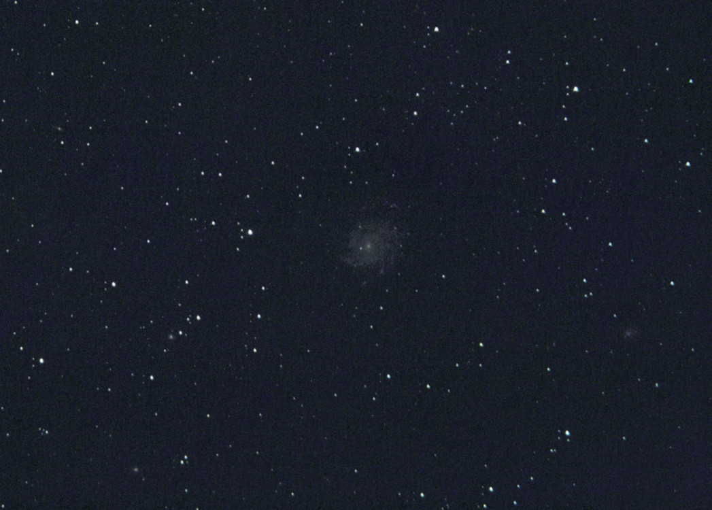

Deepsky (Messier) Objects


M1 The Crab Nebula
M13 The Great Hercules Cluster
M27 The Dumbbell Nebula
M31 The Andromeda Galaxy


M33 The Pinwheel Galaxy
M35 Open Cluster Gemini
M36+M37+M38 and Mars
M42 The Great Nebula in Orion + M43

.jpg "20081228 - 87X30s images at ISO800 - 300mm SMC Takumar lens")
.jpg "20071210 - 56x30s images at ISO800 - 400mm lens")

M44 The Beehive Cluster
M45 The Pleiades (300mm)
M45 The Pleiades (400mm)
M51 The Whirlpool Galaxy


M57 The Ring Nebula
M65+M66+NGC3628 The Leo Triplet
M76 The Little Dumbbell Nebula
M81 + M82

M101
Orion Nebulae